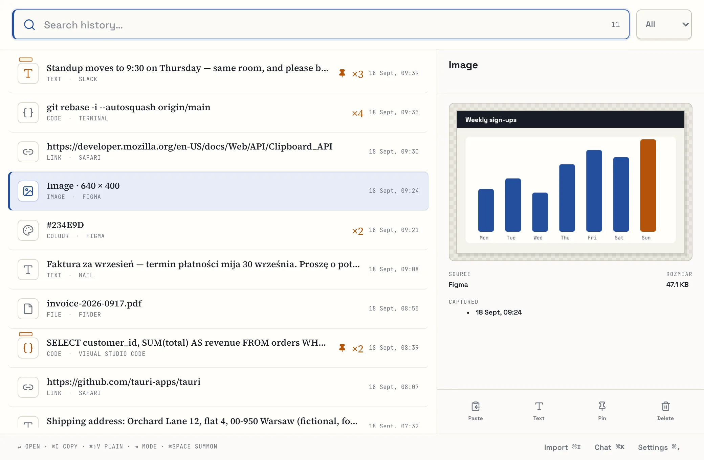
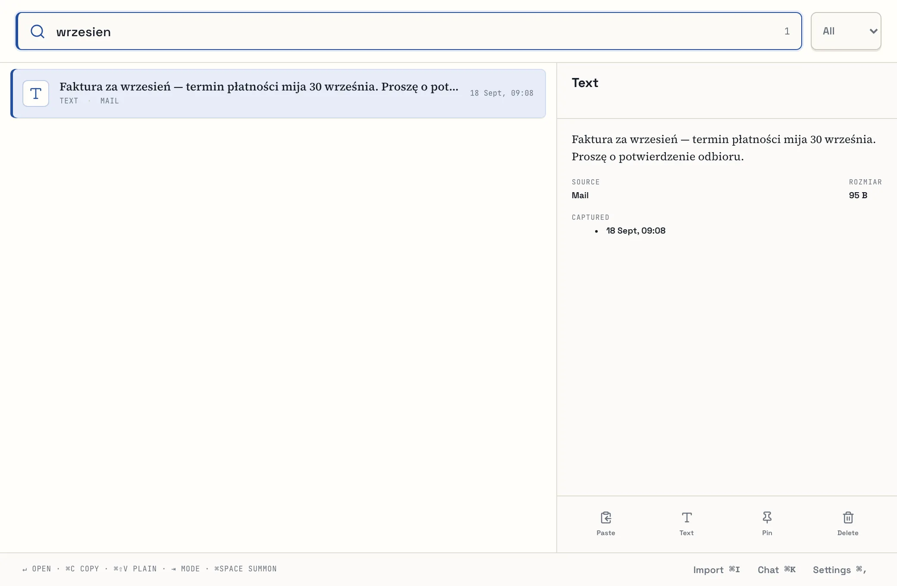
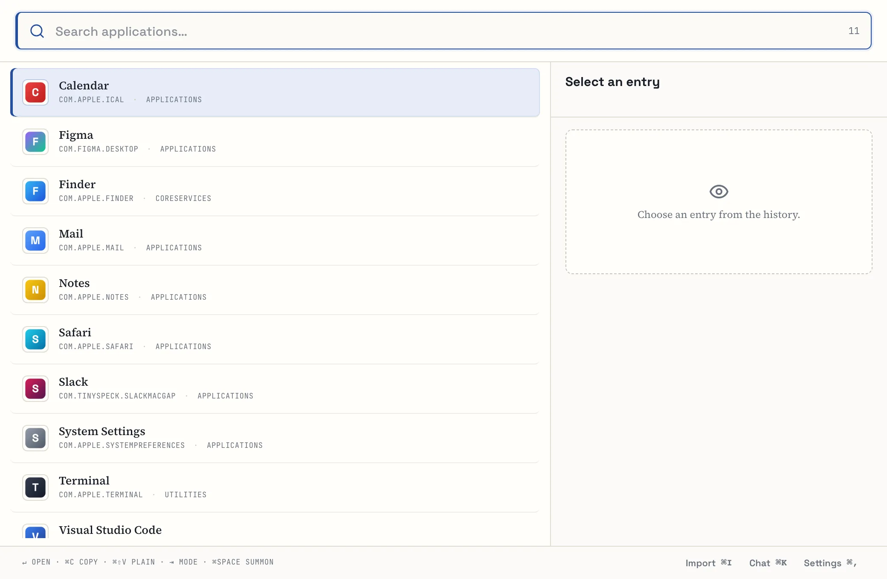
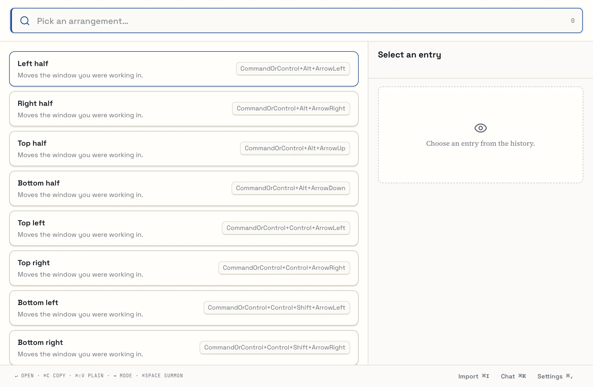
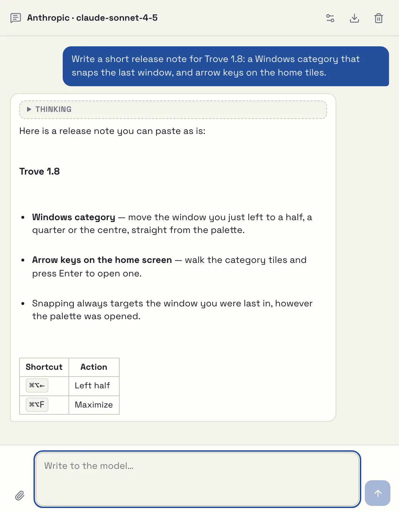
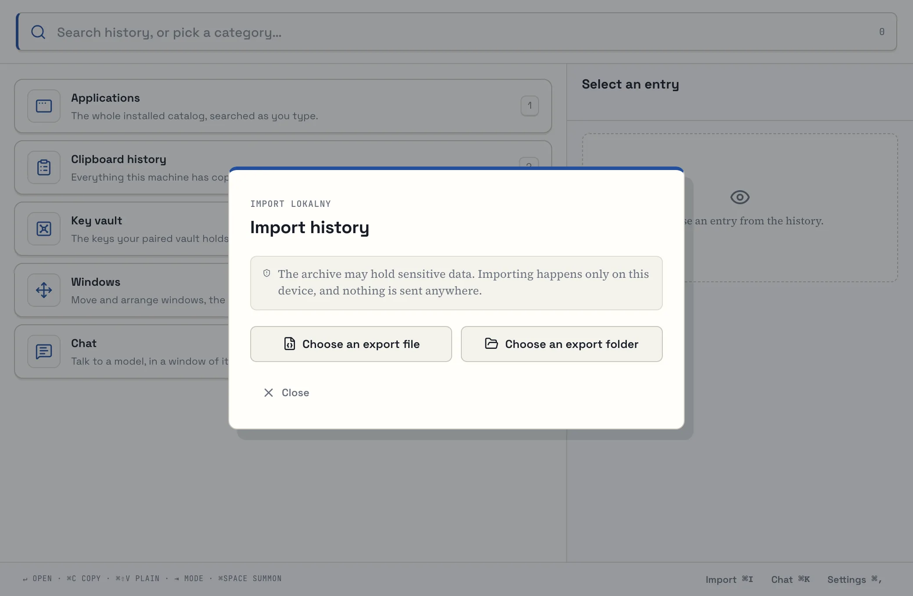

Things get lost along the way
This morning’s link, yesterday’s invoice number, a colour from the mock-up — everything you copied is in Trove, grouped and dated.
Trove remembers the text, links, images, files and code that pass through your Mac’s clipboard. Press ⌘Space, type a couple of letters and paste — and the history never leaves your computer.
Version 1.8 · Apple Silicon · signed and notarised · MIT licence

macOS keeps only the last thing you copied. One ⌘C too many and that address, contract clause or terminal command is gone.
This morning’s link, yesterday’s invoice number, a colour from the mock-up — everything you copied is in Trove, grouped and dated.
The history, its index and its files live in a local SQLite database on your disk. No account, no sync, no telemetry.
History is unlimited, and a typical search across a million entries takes a few milliseconds. There’s nothing to tidy up.
The Trove palette opens over whatever app you’re working in. Pick a category, search and paste — all from the keyboard.

Full-text search ignores diacritics — including Polish letters like “ł” — so you can type however is quickest and still land on the right entry before you finish the word.
A type filter narrows the list to just links, images or files.

Category 1 lists every installed app, with its icon. “vsc” finds Visual Studio Code, “chrm” finds Chrome. An app you’ve just installed shows up without a restart.

Halves, quarters, maximise and centre — from the palette or with global shortcuts such as ⌘⌥←. Trove moves the window you were last working in, even if you opened the palette from the menu bar.

Talk to a model from Anthropic, OpenAI, OpenRouter or Z.ai using your own API key. Answers stream in as they’re written, with Markdown, tables and code blocks. The conversation lives only in the window’s memory.
Open it with 5 or ⌘K from the palette.

Trove imports Raycast’s encrypted .rayconfig export as well as JSON and CSV files from Raycast and SuperCmd. The import runs entirely on your Mac, and running it twice creates no duplicates.

Category 3 lists the key names in your personal vault. The value goes straight to the clipboard and is never saved in the history.
History is unlimited by default. You can have Trove delete entries older than N days — pinned ones stay.
No Dock icon and no ⌘Tab entry unless you turn it on. The menu bar is also where you pause capture.
Export the whole history to a folder, and see in settings how much space the database and files take up.
Clipboard content, queries and paths never reach the logs. Password managers mark their entries as concealed — Trove skips them before reading anything. You can also exclude any app you like.
The network comes into play in just three features, each of which you switch on yourself:
| Feature | What it sends, and where | How to turn it off |
|---|---|---|
| Link previews | Fetches the title, icon and image of a page you copied a link to. Ports 80 and 443 only, never local or private-network addresses. | Settings → Links |
| Chat | The messages in the conversation — only to the provider you picked, with your key. | Simply don’t open the chat |
| Key vault | A request to your own vault, and only once you enter that category. | Sends nothing unless configured |
Download the DMG from GitHub Releases and drag Trove to Applications. Its icon appears in the menu bar.
Trove quietly saves everything that reaches the clipboard — except excluded apps and password-manager entries.
⌘Space opens the palette over the current window. Keys 1–5 pick a category; just typing searches the history.
Enter pastes the entry into the window you were in. The first time, macOS asks for the Accessibility permission.
⌘Space belongs to Spotlight out of the box. Trove spots the clash and offers a button in settings that frees the shortcut — or hands it back to Spotlight. You can also pick any other combination.
Measured on 23 August 2026 on a synthetic history of one million records (Apple Silicon, using the trove-bench tool in the repository).
To be fair: a query for a word that appears in much of the history takes hundreds of milliseconds (811 ms p95 for 600,000 matches), because every match has to be scored. Memory was measured on a debug build.
The real Trove interface, on made-up data. Click to enlarge; the arrow keys move between shots.
A Rust core (a workspace of over a dozen crates), a Tauri 2 shell and a React 19 interface in TypeScript. Data lives in SQLite in WAL mode, with an FTS5 index and a content-addressed file store.
You’ll need macOS with the Xcode Command Line Tools, Rust 1.96 (pinned in rust-toolchain.toml), Node 22 and pnpm 10.33. No environment variables are required.
pnpm install
# the interface in a browser, on synthetic data
pnpm dev
# the native app, with its own development database
TROVE_DATA_DIR="data/dev" pnpm tauri devcargo fmt --all --check
cargo clippy --workspace --all-targets --locked -- -D warnings
cargo test --workspace --locked
pnpm typecheck && pnpm test -- --run && pnpm buildapps/desktop-uiinterface: React + TypeScript + Vitecrates/trove-coreentities, canonicalisation, hashingcrates/trove-storeSQLite, migrations, CAS, writercrates/trove-searchPolish normalisation, FTS5, rankingcrates/trove-importRaycast and SuperCmd parserscrates/trove-launcherapp catalogue and launchingcrates/trove-link-previewguarded preview fetchingsrc-taurilifecycle, IPC, permissionstools/trove-import-cliimport and verification from the terminaltools/trove-benchsynthetic history and measurementscargo run -p trove-import-cli -- analyze --source <directory-or-file>
cargo run -p trove-import-cli -- import --source <…> --data-dir data/devWindows and Linux adapters exist in the code but have not yet been compiled or run on those systems — for now, Trove is a macOS app.